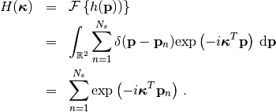
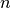
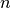
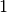

Scientist’s Documentation¶
This pages describes the motivation and the approach behind the sensor placement algorithm. More details are found in the original publication:
Stefano Maranò, Donat Fäh, and Yue M. Lu, “Sensor Placement for the Analysis of Seismic Surface Waves: Sources of Error, Design Criterion and Array Design Algorithms”, Geophys. J. Int. (2014) 197 (3): 1566–1581. Free access online, doi:10.1093/gji/ggt489.
The proposed sensor placement algorithm was developed to design planar arrays in seismology. Other possible domains of application include acoustic and radar. The most important assumption behind this work is that the wave should cross the array with a pklane wavefront.
Motivation¶
The presence of outliers can severely downgrade the estimation performance. Outliers are related to the presence of sidelobes in the array response.
In the image below, we evaluate the performance of a maximum likelihood estimator at three different signal-to-noise ratio (SNR) levels. The wavevector of a wave with plane wavefront is estimated using the WaveDec software. The red cross pinpoint the location of the true wavevector. The black crosses pinpoint the estimated wavevector for different noise realizations.
At low SNR, the wavenumber estimates appears to be distributed randomly. The signal is dominated by the strong noise and the estimates carry no information about the true wavevector.
At intermediate SNR, many estimates cluster near the true wavevector. Many other estimates are clustered away from the true wavevector. They are clustered near the sidelobe of the expected loglikelihood function (shown in the background). This large errors are called gross errors or outliers.
At high SNR, all the estimates are clustered near the true wavevector. Their variance is well described by the Cramér–Rao bound.

Wavenumber estimate at low signal-to-noise ratio (SNR), at intermediate SNR and at high SNR.¶ |
Important quantities¶
Given sensor positions we define the sampilng pattern as the sum of Dirac delta centered at the sensor positions
(1)¶
Then we consider the two-dimensional Fourier transform of the sampling pattern. Let denote the wavevector (spatial frequency). The Fourier transform is
(2)¶
The squared complex modulus of the Fourier transform, , is known as array response.
Sampling pattern of a 5 sensor array.¶ |
The array response .¶ |
{kind=link}
{kind=link}
Relationship with likelihood function¶
Love and Rayleigh likelihood functions are related to the array response. It can be shown that the likelihood function of a Love wave is realted to the array response as
(3)¶
where denotes the expectation operator, is the likelihood function. True wave parameters are detoted with the superscript .
Similarly, for Rayleigh waves, it can be shown that
(4)¶
The functions and multiply the array response changing its shape. They reflect the contribution to the likelihood function of the three-component sensors. It is important to stress that these two functions do not depend on the sensor positions. For an acoustic wave measured at a microphone array (scalar sensor), these factor would disappear.
The following pictures show graphically the relationship between likelihood function and array response. Observe the shift corresponding to the true wavevector and compare with the array response depicted in the previous section.
Likelihood function for a Love wave. The true wavenumber is .¶ |
Likelihood function of a Rayleigh wave.¶ |
{kind=link}
{kind=link}
More details concerning the relationship between likelihood function and array response are given in [Maranò_et_al_2014b].
Proposed cost function¶

The region on the wavenumber (spatial frequency) plane is defined by  and
and  .¶
.¶
Our aim is to reduce the sidelobes of the array response in a certain spatial badwidth of interest. The region of interest is the annulus defined by a minimum and maximum wavenumber, and , respectively.
We formulate the following optimization problem, minimizing the largest sidelobe in the region :
(5)¶
This problem is very difficult to optimize. In fact, the minimization variables appear in the argument of complex exponentials, cf. Eq. (2).
Warning
The values and define region where the sidelobes are minimized. They should not be confused with the smallest and largest resolvable wavenumber by the optimized array (i.e., array resolution limits).
The array resolution limits are clearly related with the extent of the region . The smallest resolvable wavenumber is typically slightly smaller than . The largest resolvable wavenumber is typically .
Discretization and relaxation¶
Instead of dealing with the optimization problem of Eq. (5) directly, we restrict the possible sensor position to arbitrary discrete locations. We introduce the vector to represent the presence or absence of a sensor at discrete locations.
The discretized problem is
(6)¶
where is a linear operator computing the array response at  spatial-frequency points. The infinity norm returns the largest complex modulus of the array response, .
spatial-frequency points. The infinity norm returns the largest complex modulus of the array response, .
Let be the -th spatial frequency and let  be the position of the -th possible sensor location. The element of
be the position of the -th possible sensor location. The element of  is
is
(7)¶
A linear constraint specifying the number of sensors is enforced within .
The ojective function in (6) is convex, a major improvement from (5)! The problem is still very hard because of the binary constraint on the vector  .
.
As a last step, we relax the problem. Instead of considering the largest sidelobe in terms of complex modulus (), we consider the absolute value of the real and imaginary parts ( and ). With this relaxation, the objective function becomes linear.
The relaxed problem, after introducing the dummy variable is
(8)¶
where is a vector of  s of length  .
.
The optimization problem of Eq. (8) is addressed numerically as a mixed integer program (MIP).
How to choose the parameters?¶
Note
TODO Here we explain how to choose the various parameters. How they affect the results and the computational complexity.
Stretching¶
Note
TODO Explain application of scaling property to stretch a normalized array
Bibliography¶
- Maranò_et_al_2014b
Stefano Maranò, Donat Fäh, and Yue M. Lu, “Sensor Placement for the Analysis of Seismic Surface Waves: Sources of Error, Design Criterion and Array Design Algorithms”, Geophys. J. Int. (2014) 197 (3): 1566–1581. Free access online.